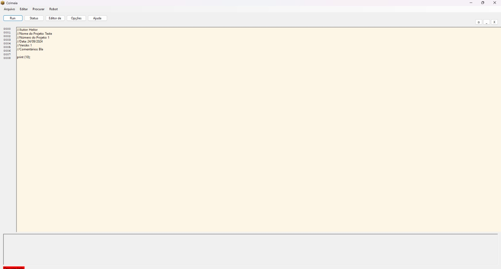
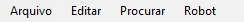
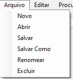
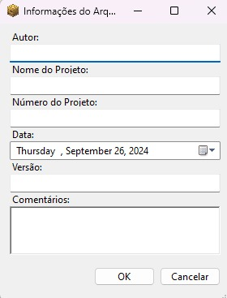

Configuração Inicial da IDE FLDSMDFR
Passo 1: Abra a interface e confira a imagem abaixo:

Tela Inicial: Primeira tela vista ao rodar a interface.
Passo 2: No menu superior, clique em arquivo:

Menu Superior: a opção "Arquivo" pode ser vista logo no início.
Passo 3: Com a janela de opções aberta, clique em Novo ou para Abrir um projeto existente.

Menu de arquivo: veja as opções disponíveis.
Primeiros Passos
Após a configuração inicial, siga estes passos para criar seu primeiro projeto:

Configuração de Projeto: após clicar em Novo, essa tela aparecerá para inserir detalhes do projeto.
Recursos da IDE
Veja, na página seguinte, tópicos sobre os recursos e menus de FLDSMDFR.